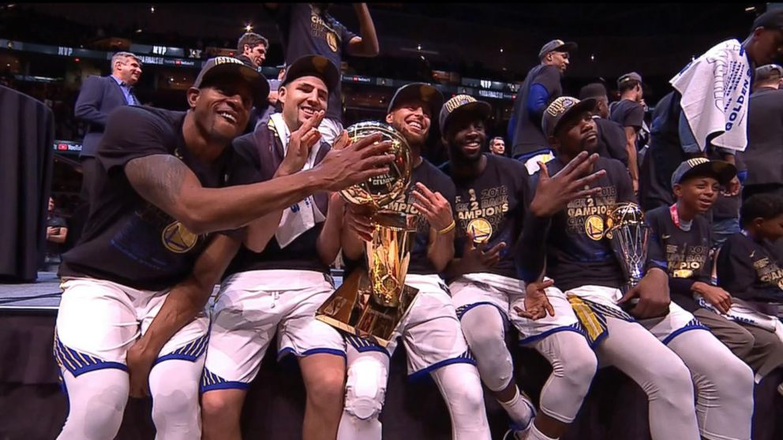

The Golden State Warriors are an American professional basketball team based in Oakland, California. The Warriors compete in the National Basketball Association (NBA), as a member of the league's Western Conference Pacific Division. Founded in 1946 in Philadelphia, the Warriors relocated to the San Francisco Bay Area in 1962 and took the city's name, before changing its geographic moniker to Golden State in 1971. They play their home games at the Oracle Arena.The Warriors won the inaugural Basketball Association of America (BAA) championship in 1947, and won its second championship in 1956, led by Hall of Fame trio Paul Arizin, Tom Gola, and Neil Johnston. However, the Warriors would not return to similar heights in Philadelphia, and after a brief rebuilding period following the trade of star Wilt Chamberlain, the team moved to San Francisco. With star players Jamaal Wilkes and Rick Barry, the Warriors returned to title contention, and won their third championship in 1975, in what is largely considered one of the biggest upsets in NBA history.
Watch our past Championship against Lebron James and the Cleveland Cavaliers in the NBA Finals
Other Links